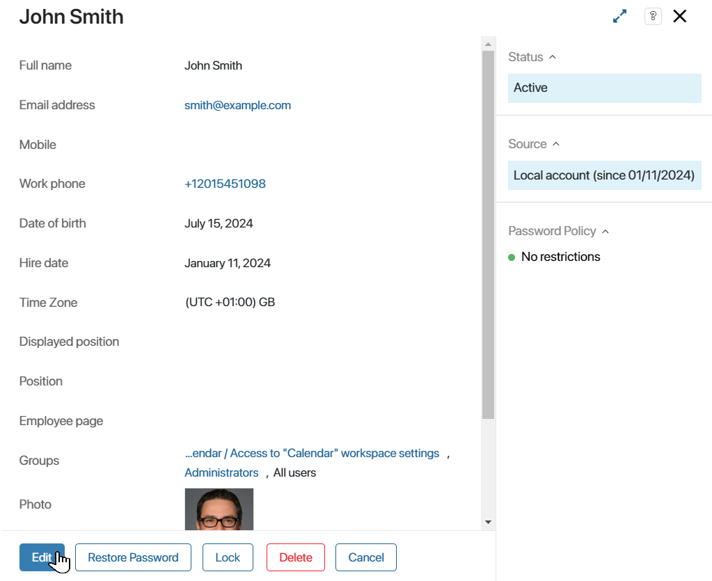
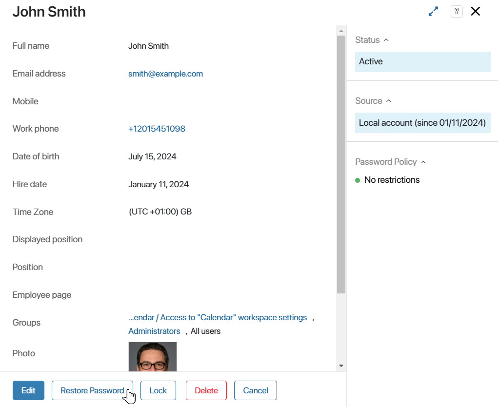

You can manage users in Administration > Users. Here you can:
- Invite users to your company:
- Manually by sending them an invitation to their email or phone number.
- Import them from another corporate system, such as Active Directory/LDAP.
- Lock and unlock user access to the system.
- Assign job positions.
- Add groups.
- Restore passwords.
- Delete the user account.
начало внимание
All the listed actions are applied to internal users and are available to Administrators only. External users of the portal are added and managed in System apps.
конец внимание
The list the Users page shows employees with the Active, Invited, Account is locked, and Invitation canceled statuses. To view the users that are locked manually and users with canceled invites, please use search by parameters.
Also, you can see who is interacting with BRIX at the given moment. To do that, go to Administration > Active Users.
Invite a new user
To add a new user to your company, send them an invite via email or phone number.
You need to enable advanced authentication options to send invites to phone numbers.
Sending invitations to new users and password recovery emails is set by default in the SaaS edition, and is configured separately in the On-Premises edition.
Configure sending email invitations for BRIX On-Premises
|
To do this, go to Administration > Users, and in the upper right corner click on the +User button.
The Invite User form opens.
Fill out the fields:
- Email address*. Specify the email address to which the invitation should be sent. It is unique for each user. If there is already a user with the specified address in the system, you cannot send an invitation. If you have enabled authentication by phone number, it is not necessary to fill in this field.
- Full name. Specify the full name of the person.
- Mobile. Specify the employee’s mobile phone number. If you have authentication by phone number enabled, the invitation to the company will be sent to the specified number. Please note that if you fill in the Email field, the invitation will be sent to the user’s email address instead of the phone.
- Work phone. Enter the employee’s work phone number. The additional number is indicated with a separator.
- Date of birth. Enter the date of birth of the employee.
- Hire date*. The current date is displayed by default.
- Time zone. The user’s time zone. The default value is the company’s time zone.
- Displayed position. If a user has several positions, specify which one will be shown in their profile and users lists in the Company workspace.
- Position. Select one or more positions from the organizational chart of the company.
If you have selected a position that is already occupied, a warning window will open with the employee in that position. You can remove the employee from the position or select another one by editing the profile. After saving the changes, assign a new user to the vacated position.
- Business calendar. Select business calendar from the drop-down list. The work schedule configured in the calendar will be used to calculate the due date for tasks assigned to the user.
- Groups. Add the employee to user groups.
- Photo. Upload the employee’s photo.
- Accounts. Select a messenger or social network from the list and enter employee credentials. You can add multiple accounts.
- Additional data. You can fill this field manually, by script, or via import from AD/LDAP.
After all the data is entered, click on the Send Invite button. A message will be sent to the specified email or phone number. It will be valid for three days. The name of the employee will appear in the Users list with the Invited status.
The user should follow the invitation link and fill in the form with personal data: password, full name, and phone number. This way they will be authorized in BRIX and will be able to start working in the system, and their status will change to Active.
If the user was imported from AD/LDAP, they are automatically assigned the Active status. They can log in using their login and password from AD/LDAP.
Resend invitation
If necessary, you can resend the invitation. To do this, open the user profile and click the Resend Invitation button.
Cancel invitation
If necessary, you can cancel the invitation. To do this, open the user profile and click on the Cancel Invitation button.
Edit user profile
If you need to add or edit the employee’s information, for example, change the job position, go to their profile and click Edit.

Make all the necessary changes and then click Save.
Please note that the Email address field is editable only in BRIX On-Premises.
Restore password
If the user has forgotten the password or cannot log in to the system, they can use password recovery.
Open the user’s profile and click Restore Password. A password recovery link will be sent to the specified email address.

By clicking on the link, the user will be able to enter a new password and save it.
Restrict user access to the system
You can manually forbid a user to access the system by blocking their account, for example, when their employment contract is over. Also, access can be restricted automatically if the user has entered an invalid password several times in a row. This option is enabled on the Security Settings page.
To limit access to corporate information, block their account. You can do this in one of the following ways:
- Check one or several employees in the list, click Selected Items and select Lock.
- Go to the employee’s profile and click Lock.
If a user has unfinished tasks, you will see a list of these tasks when the account is locked. It is recommended to reassign or complete active tasks before proceeding. Click on a task name to navigate to it and perform the necessary actions.
To lock the user without closing tasks, click Continue anyway.
The user’s status will change to Locked. They will not be able to log in to the system.
Please note that only active users can be locked. The locked user will no longer be displayed in the general list of users. Their named license is vacated.
Unlock a user
To restore the user's access to the system, find the user searching by parameters — set Locked in the Status fields. Then restore access in one of the following ways:
- Check one or several employees in the list, click Selected Items and select Unlock.
- Go to the employee’s profile and click Unlock.

After that, the employee will be displayed in the general list of active users and will be able to log in to the system.
Automatic lockout
If you have set up login requirements on the Security Settings page, a user may get locked out automatically after entering an invalid password several times in a row. In this case, their status will remain Active, however, the Account is locked label will appear on the right panel of the user's page, in the Password Policy section.
To restore access, go to the employee’s profile and click on the Account is locked label.
After you confirm the action, the user will be able to log in again.
Delete a user
You can delete a user’s account, for example, when terminating an employment relationship. The user will not be able to log in and their data will be deleted from the system.
You can delete a user in any status: active, invited, or locked. The status does not change during deletion.
You can delete a user in one of the following ways:
- Check one or several employees in the list, click Selected Items and select Delete.
- Go to the employee’s profile and click Delete.
If a user has unfinished tasks, you will see them listed. It is recommended to reassign or complete active tasks before continuing. To do this, click on the task name and perform the necessary actions on its page.
To delete a user without closing tasks, click Continue anyway.
When a user is deleted from the system, the following is performed:
- The user’s data is deleted and the user will not be able to authorize in the system.
- The positions occupied by the user in the organizational structure are cleared.
- The user is deleted from the list of executors in the tasks assigned to them.
- The user-created items, files, sent messages are displayed without the author's indication.
- Employees lose access to correspondence with the deleted user in the Messages workspace.
Restore a user
A deleted user can be recovered. All their data in the system will also be restored.
The user will be restored with the same status they had before deletion. They will also be listed again as an executor in the tasks assigned to them, signed as the author of items, files, activity stream messages, etc. Previous correspondence with them will become available to other employees in the Messages workspace.
When a user is deleted, their position in the organizational structure is vacated. When restoring, edit the employee’s profile and specify their position.
To restore a deleted user, find them using the Deleted filter.
Then restore them in one of the following ways:
- Check one or several employees in the list, click Selected Items and select Restore.
- Go to the employee’s profile and click Restore.

Please note that if you have imported another user with the same login, you cannot restore the deleted account.
Find a user
You can search for a user by full name, email address, or login. To do this, start typing a word in the search bar and press Enter.
To use other search options, click on the filter icon. For example, you can search for a user by their position in the organizational chart or the group they are a member of.
To search for locked users or those whose invitations have been canceled, specify the appropriate value in the Status field. You can find deleted users using the Deleted filter.
Customize the display of users
User profiles are presented on the page as a table. For other employees, this table is also displayed when searching in the Users type field.
You can customize the appearance of the table:
- Add or remove columns with data.
- Move columns.
- Set sorting of entries by a certain parameter.
начало внимание
Table customization is available after enabling the enableCustomUsersApplicationSettings feature flag. Please contact BRIX tech support for this purpose.
конец внимание
To configure the table, click the gear icon in the upper right corner of the page.
Found a typo? Select it and press Ctrl+Enter to send us feedback